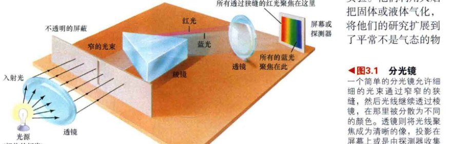
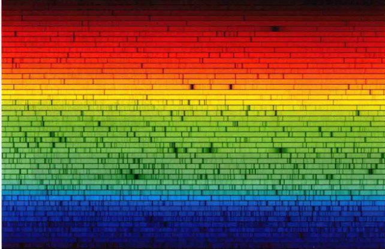
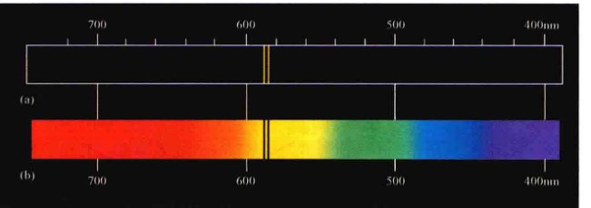
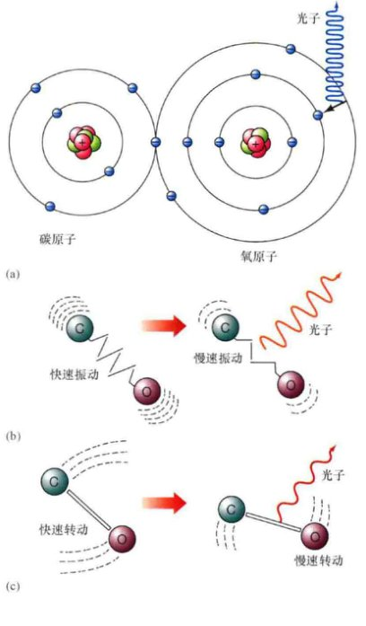
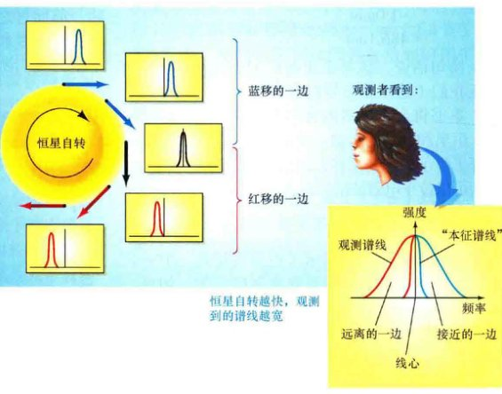

第3章 光谱学 原子的内在活动
学习目标
本章的学习将使你能够：
- 描述连续谱、发射谱和吸收谱的性质，以及它们各自产生的条件。
- 解释发射线和吸收线之间的关系，以及我们可以通过它们了解到什么。
- 指出原子的基本构成并描述我们对其结构的现代看法。
- 概述使科学家得出光具有粒子和波动性结论的观测。
- 解释原子中的电子跃迁如何在它们的光谱中产生独特的发射和吸收特征。
- 描述分子产生的光谱的一般特征。
- 列出并解释通过分析天体的光谱能获得哪些种类的信息。
辐射的波动描述让19世纪的天文学家开始可以破译从宇宙到达地球的、以可见光和不可见光的形式传播的信息。然而，在20世纪初期，电磁现象的波动理论很显然是不完善的——光在某些方面不能简单地用纯粹的波动术语来解释。
当辐射与物质在原子尺度上相互作用时，它不再表现得像连续波那样，而是显得不稳定、不连续——实际上，像粒子一样。通过这一发现，科学家很快认识到，原子也一定表现得不连续，一场科学革命开始登上舞台——量子力学——几乎影响了现代生活的所有领域。
3.1 谱线
第3章里，我们了解了一些天文学家是如何通过分析来自太空的电磁辐射来获得遥远天体信息的内容。这个过程中至关重要的一步就是光谱信息——将入射辐射的组成波长细致分解。但在现实中，没有任何宇宙天体发出的辐射是完美的黑体谱，就像我们之前讨论过的那样。（2.4节）所有的光谱都与理想形式的光谱有所偏离——有些只有一点差别，而另一些的差别却很大。然而，这并不能否定我们之前的研究，这些偏差包含了丰富的有关辐射源内在物理条件的详细信息。光谱是如此重要，有必要让我们来研究一下天文学家是如何获得并解释它们的。
辐射可以利用一种被称为分光镜的仪器来进行分析。这种装置最基本的形式包括一个不透明的且有狭缝的屏障（生成光束）、一块棱镜（用于将光束分解为组成颜色）以及一个目镜或屏幕（允许使用者查看生成的光谱）。图3.1展示了这样的一个组合。而天文学家使用的被称为光谱仪或分光计的研究设备要更加复杂，包括一台望远镜（收集辐射）、一套色散装置（将辐射分散为光谱），以及一个探测器（记录结果）。尽管它们更加复杂，但它们的基本操作在概念上与图中所展示的简易分光镜一样。
一个简单的分光镜允许细细的光束通过窄窄的狭缝，然后光线继续透过棱镜，在那里被分散为不同的颜色。透镜则将光线聚焦成为清晰的像，投影在屏幕上或是由探测器收集分析，如图所示。
在许多大型仪器中，棱镜已被一种名为衍射光栅的设备所替代，该设备由一片刻有许多密集平行条纹的透明材料构成。条纹之间的间隔一般是几微米 ($10^{-6}$m)，与可见光的波长相当。间隔起到许多微小狭缝的作用，光在通过光栅时发生衍射（或是从光栅上反射，这取决于装置是如何设计的）。（探索2-1）由于不同波长的电磁辐射在遇到光栅时产生的衍射大小不同，最终效果就是光束被分成它的组成颜色。你可能比自己所认为的要更加熟悉衍射光栅——从光盘上反射回的光线中可见“彩虹”的颜色，那就是这一过程产生的结果。
发射线
我们在第2章中所遇到的光谱是连续谱的例子。比如一个灯泡发出的辐射覆盖所有波长（主要位于可见光范围），其强度分布可以用对应于灯泡温度的黑体曲线来很好地进行描述。（2.4节）透过分光镜观察，灯泡所发出的光的光谱呈现出熟悉的颜色彩虹，从红色到紫色，没有间断，如图3.2(a)所示。
然而，并不是所有的光谱都是连续的。比如，如果我们取一罐装有纯氢气的罐子，并对它放电（有点像一道闪电穿过地球大气），那么氢气就会开始发光——也就是说发出辐射。如果我们用分光镜来查看这种辐射，我们便会发现它的光谱是由黑暗背景上的几条亮线构成的，完全不像炽热灯泡所产生的连续谱。图3.2(b)展示了该实验的布置和结果示意图。（更详细的氢光谱图见图3.3顶部。）注意，该实验中氢所产生的光并不包含所有可能的颜色，相反只包括少许狭窄的、清晰的发射线——连续谱上的细“条”。黑色背景代表的是所有氢不能辐射出的波长。

(a) 当通过狭缝并被棱镜色散时，来自连续辐射光源（如炽热的灯泡）的光产生了人们熟悉的彩虹颜色。
(b) 相反，来自被激发的氢气的光则由被称为发射线的一系列明显的明亮谱线所组成。（为清楚起见，聚焦透镜被省略了——见4.1节。）
经过几次实验后，我们也会发现，尽管我们可以改变发射线的强度——比如通过改变罐子里氢气的多少或是放电的强度——但我们不能改变发射线的颜色（亦即它们的频率或波长）。光谱中发射线的排列展示了氢元素的性质。不管我们何时进行这个实验，得到的都将是同样的颜色特征。
到19世纪早期，科学家们已经对许多不同的气体进行了类似的实验。他们利用火焰把固体或液体气化，将他们的研究扩展到了平常不是气态的物质上。有时，发射线的排列相当简单，有时也很复杂，但总是对应特定的元素。即便不理解发射线的起源，研究者也很快意识到，这些发射线提供了所研究物质独一无二的“指纹”。他们可以探测到某种特定的原子或分子（原子通过化学键结合在一起，见3.4节）的存在，仅仅通过研究它所发出的光。科学家们已经积累了大量的数据，记录下了许多不同的热气体所发出辐射的特定波长。某种给定化学成分的气体所发出的光的独有图案排列被称为该气体的发射谱。图3.3展示了一些常见物质的发射谱。

一些众所周知的元素的发射谱。按照本书所采用的约定，频率向右为增加。注意，这里所显示的紫色阴影，波长要约短于400纳米，实际上位于光谱的紫外范围中，人眼是看不见的。[沃巴什仪器公司 (Wabash Instrument Corp.)]
吸收线
当太阳光被棱镜色散时，乍一看似乎是一个连续谱。然而，仔细察看光谱后会发现，太阳光谱被大量的狭窄暗线垂直隔断了，如图3.4所示。我们现在知道，这些线条中的大部分都展现了被太阳外层大气或地球大气中所存在的气体移除（吸收）的光的波长。这些光谱上的缝隙被称为吸收线。
太阳的可见光谱在明亮的连续谱之上叠加了数以百计的垂直暗吸收线。一组48条垂直叠放的水平条带展示了太阳的高分辨率光谱；每个条带从左到右覆盖了整个光谱的一小部分。波长范围从左上的长波（红色）延伸到右下的短波（蓝色）处。也可参考第52页章节开篇处的光谱。[美国大学天文联盟 (AURA)]
英国天文学家威廉·渥拉斯顿在1802年第一次注意到太阳的吸收线。之后德国物理学家约瑟夫·冯·夫琅禾费对其做了约10年的非常细致的研究，测量并编目了其中600条以上的谱线。这些谱线现在被统称为夫琅禾费谱线。尽管太阳是迄今为止最容易研究的恒星，也有最为丰富的可观测到的吸收线，然而我们也已经知道，类似的谱线在所有恒星光谱中都存在。
与太阳吸收线被发现几乎同时，科学家们发现，当产生连续谱的光源所发出的一束光通过冷却气体时，这些谱线也可以在实验室中被生成，如图3.5所示。科学家很快就注意到了发射线和吸收线之间的有趣联系：给定气体的吸收线出现的波长位置正好与气体被加热时产生的发射线的波长位置相同。

(a) 当冷却气体被放置在连续辐射光源（比如一个炽热的灯泡）和探测器（屏幕）之间时，由此产生的彩色光谱上叠加了一系列的暗吸收线。这些吸收线是由中间的冷却气体吸收原始光束中特定波长（颜色）的辐射而形成的。吸收线出现的位置正好与气体被加热到高温时所产生的发射线的波长位置相同，如图3.2所示。
(b) 日常生活中类似于这些谱线的是超市条形码，它们唯一地决定了商品的价格。
考虑以钠元素为例，它的发射线如图3.6所示。当加热到高温时，钠蒸汽样品发出的强烈可见光只位于两个波长——589.6nm和589.0nm——位于光谱的黄色区域。当连续谱穿过相对较冷的钠蒸汽时，两条清晰的、暗黑的吸收线正好出现在完全相同的波长处。图3.6中比较了钠的发射谱和吸收谱，清楚地显示了发射特征与吸收特征之间的关系。
(a) 钠发射线的特征。图中心的两条亮线出现在光谱的黄色区域。
(b) 钠的吸收谱。两条暗线正好出现在与钠发射谱中两条亮线波长相同的位置处。
基尔霍夫定律
光谱学用于分析物质发出和吸收辐射的方式。早期的光谱学家之一、德国物理学家古斯塔夫·基尔霍夫于1859年总结了三种光谱类型——连续谱、发射线和吸收线——之间的观测关系。他阐述了三条支配着光谱形成的光谱学准则，现在被称为基尔霍夫定律：
- 发光固体或液体，或足够致密的气体发出所有波长的光，因此产生的是连续谱辐射。
- 低密度、热气体发出的光的光谱由一系列明亮的发射线组成，这些发射线是气体的化学成分所特有的。
- 稀薄的气体吸收连续谱中特定波长的辐射，使产生吸收的位置变暗形成吸收线，叠加在连续谱之上。同样，这些吸收线也是中介气体的成分所特有的——它们正好出现在与气体在高温时发出的发射线波长相同的位置上。
图3.7说明了基尔霍夫定律以及吸收线和发射线的关系。直观地看，光源、热固体（灯泡的灯丝）产生的是连续谱（黑体）。当透过冷却的氢气云观看光源时，可见一系列暗黑的吸收线，并叠加在光谱中氢所特有的波长位置处。吸收线的出现是因为这些波长处的光被氢吸收了。正如我们将在本章后面部分见到的那样，吸收的能量随后被重新辐射到空间中——不但沿着光束的最初方向，还朝着四面八方。因此，当在黑暗背景下从侧面查看气体云时，也能看见一系列暗弱的发射线。这些发射线包含了光束在前进方向上所丢失的能量。如果气体被加热至炽热状态，它就会产生正好位于相同波长处更强的发射线。

这里用灯泡来代表连续辐射源，以说明光谱学中的基尔霍夫定律。
(a) 无阻碍的光束显示出熟悉的连续谱颜色。
(b) 当透过氢气云观看光源时，连续谱上出现了一系列暗黑的氢吸收线。当气体吸收灯泡的某些辐射并再次发射向任意方向时，形成了这些吸收线。由于大多数重新发出的辐射不能透过狭缝，效果就是被吸收的辐射从到达左边屏幕的光中被移除了。
(c) 当从侧面观测气体时，能看到暗弱的氢发射线，由重新发出的辐射组成。(b)中的吸收线和(c)中的发射线有相同的波长。
识别星光
到19世纪末，光谱学家已经发展出强大的技术宝库来解释从太空中接收到的辐射了。一旦天文学家知道了谱线是化学成分的指示器，他们就开始标识太阳光谱中被观测到的谱线。在来自地球之外的光线中，几乎所有的谱线都可以归因于已知的元素。例如，太阳光中许多夫琅禾费线与铁元素有关，这个事实首先被基尔霍夫及其同事罗伯特·本生（因本生灯而闻名）在1859年认识到。然而，一些陌生的谱线也出现在了太阳光谱中。1868年，天文学家认识到，这些谱线一定对应于一种之前未知的元素，它的名字叫氦 (Helium)，来自于希腊词helios，意为“太阳”。在太阳光中探测到氦后过了几乎30年，直到1895年，氦才在地球上被发现！（图3.3中有氦的实验室光谱。）
然而，在19世纪的天文学家从恒星光谱中可以提取到的所有信息中，仍然缺乏光谱本身是如何产生的理论解释。尽管有复杂的分光设备，但他们对恒星本质的了解比伽利略或牛顿几乎没有多多少。要理解如何能够从天体发出的光中提取到光谱的详细信息，我们必须要更深入地讨论谱线产生的过程。
✓ 吸收线和发射线是什么，它们能告诉我们有关产生它们的气体成分的什么？
3.2 原子和辐射
到20世纪初时，物理学家已经积累了大量实质性的证据，表明光有时的表现形式无法用波动理论来解释。正如我们刚刚看到的，吸收线和发射线的产生仅涉及光的某些频率或波长。如果光表现得像连续波那样，并且物质总是遵从牛顿的力学定律，那么这将不是预期的表现。其他同时期展开的实验进一步加强了这样的结论：辐射是波的看法是不完整的。显然，当光与物质在非常小的尺度上相互作用时，不再是以连续的方式，而是以不连续的、“逐步”的方式发生作用。挑战变成了寻找这种意想不到的现象的解释。最终的解答彻底地改变了我们对自然的看法，并形成了现在所有物理学和天文学的基础——甚至是几乎所有现代科学的基础。
原子结构
为了解释发射线和吸收线的形成，我们不仅必须了解光的性质，而且还需要了解原子的结构——原子是所有物质构成的微观积木。让我们先从最简单的原子开始：氢原子。一个氢原子由一个带负电荷的电子绕一颗带正电荷的质子运动而构成。质子形成原子中心的原子核 (nucleus, 复数: nuclei)。氢原子整体上是电中性的。等值且电荷相反的质子与绕转的电子产生电场吸引，结合在一起形成原子。
这样的氢原子形象是如何同与氢气有关的发射线和吸收线特征产生关联的呢？如果一个原子吸收一些辐射形式的能量，那么这些能量一定引起了某些内部的变化。类似地，如果原子发出能量，那么能量一定来源于原子内部某处。原子吸收或是释放能量与做轨道运动的电子运动状态的改变相关联，这样的假设是合理的（并且是正确的）。
第一个提供解释氢的观测谱线的原子理论是丹麦物理学家尼尔斯·玻尔在1912年建立的。现在简称其为原子的玻尔模型，其基本特征如下：
- 存在能量最低的状态——基态，代表电子在绕原子核运动时的“正常”状态。
- 电子要保持作为原子的一部分，所以存在能量最大的状态。一旦电子获得的能量超过最大能量，那么它将不再被原子核所束缚，即原子被电离了；失去一个或更多电子的原子被称为离子。
- 最重要的（也是最直观的）是，在最低和最高两个能级之间，电子只能以某些界限清晰的能量状态存在，通常被称为“电子轨道”。
这样对原子的描述与牛顿力学的预测形成了鲜明对比：牛顿力学允许轨道以任何能量存在，而不仅仅是某些特定的值。在原子领域内，这样的不连续表现是很正常的。用该领域的专业术语来表达，即轨道的能量是量子化的。量子力学是支配原子和亚原子粒子行为的物理学分支，和日常生活中的经验大相径庭。
在玻尔的原始模型中，每个电子轨道都有着特定的半径，非常像太阳系中一颗行星的轨道，如图3.8所示。然而，现代观点并不如此简单。如图3.9所示，尽管每个轨道有明确的能量，但轨道边界却并不明确。相反，现在假想电子拖曳出一团围绕着原子核的“电子云”。我们不能断定电子“在哪儿”，我们只能谈及在云里某个位置发现它的概率。通常把电子云到原子核的平均距离作为电子轨道的“半径”。当氢原子处于基态时，轨道半径约为0.05nm (0.5Å)。随着轨道能量的增加，半径也随之增加。
20世纪早期的氢原子概念——玻尔模型——描绘出电子处在围绕中心质子的一个界限清楚的轨道上，就像行星围绕着太阳。图中显示了两个不同能量的电子轨道：(a) 基态和 (b) 激发态。

现代观点的氢原子中可见电子像“云”一样围绕着原子核。和图3.8一样，本图显示了同样的两个能态。
为让接下来的图清晰起见，我们在本章内用实线来表示电子轨道。（参考60页的详细说明3-1，了解氢原子能级的详细细节。）但是，你应该永远牢记，图3.9是更加准确的真实描述。
原子并不总是处于基态。当一个电子处于比到其母原子核正常距离远的轨道上时，原子处于激发态。处于这样激发态的原子有着高于常值的能量。能量最低的激发态（也就是能量最接近于基态的状态）被称为第一激发态，能量第二低的是第二激发态，以此类推。原子可以通过两种方式之一而激发：通过从某个电磁辐射源吸收能量或者同其他一些粒子（比如其他的原子）碰撞。然而，电子不能一直处在较高的轨道上；基态才是原子可以无限期逗留的唯一状态。$10^{-8}$s 后，激发的原子会回到基态。
辐射的粒子性
由于电子只存在于有特定能量的轨道上，所以原子只能吸收特定数量的能量，并伴随着其电子提升到激发态。同样，随着电子掉落回较低的能态，原子只能辐射出特定数量的能量。因此，在这些过程中吸收或辐射的光能量的大小，必须精确地对应于两个轨道之间的能量差。原子的量子化能级要求光以不同的电磁辐射“包”的形式被吸收和辐射，每个包带有特定量的能量，我们称这些包为“光子”。实际上，光子就是电子辐射的“粒子”。
光有时表现得不像连续的波，而像粒子流，这样的观点在1905年由阿尔伯特·爱因斯坦提出，以解释当时困扰物理学家的许多实验结果（特别是光电效应——参见探索3-1）。此外，爱因斯坦能够量化光的双重性质的两方面之间的关系。他发现，光子所携带的能量必定正比于辐射的频率：
例如，频率为 $4 \times 10^{14}$ Hz（或波长约为750nm）的“深红色”的光子能量是频率为 $8 \times 10^{14}$ Hz（波长=375nm）的紫色光子能量的一半，是频率为 $8 \times 10^{11}$ Hz（波长=375 µm）的微波光子能量的500倍。
前面所述关系里的比例常数现在被称为普朗克常数，以纪念德国物理学家马克思·普朗克，他确定了该数值的大小。通常总是用符号 $h$ 来表示普朗克常数，涉及光子能量 $E$ 与辐射频率 $f$ 的关系的方程一般写为：
$E = hf$
详细说明 3-1 氢原子
通过观察氢的发射谱并利用爱因斯坦首先提出的光子能量和颜色之间的关系（3.2节），尼尔斯·玻尔在20世纪早期确定了各种能级之间的能量差异应当是多少。利用这些信息，他就可以推断出氢激发态的实际能量。
原子物理中通常使用的能量单位是电子伏特 (eV)。（这一名字实际上有着一定程度的科学含义：它是一个电子加速通过1V的电势时所获得的能量大小。然而，对我们的研究目标来说，这仅仅是一个便捷的能量大小。）1电子伏特 (1eV) 等于 $1.60 \times 10^{-19}$ J（焦耳）——大约为单个红光光子所携带能量的一半。将氢原子从基态电离所需的最小能量为13.6eV。玻尔对氢原子的能级进行了编号，能级1为基态，能级2为第一激发态，以此类推。他发现将基态的能量设定为零时，任何能态（即第 $n$ 级）的能量可表示成如下形式：
$E_n = 13.6 (1 - \frac{1}{n^2}) \text{ eV}$
因此，基态 ($n=1$) 的能量为 $E_1=0 \text{ eV}$，第一激发态 ($n=2$) 的能量为 $E_2 = 13.6 \times (1 - 1/4) \text{ eV} = 10.2 \text{ eV}$，第二激发态的能量为 $E_3 = 13.6 \times (1 - 1/9) \text{ eV} = 12.1 \text{ eV}$，以此类推。基态与使原子电离的能量之间有无限多的激发态，随着 $n$ 的增加越来越密集，$E_n$ 也越接近13.6 eV。
示例 利用玻尔计算每个电子轨道能量的公式，我们可以反过来推理并计算任意两个给定能态之间跃迁所对应的能量。要把电子从第一激发态激发到第二激发态，必须提供给原子 $E_3 - E_2 = 12.1 \text{ eV} - 10.2 \text{ eV} = 1.9 \text{ eV}$ 的能量，即 $3.0 \times 10^{-19} \text{ J}$。现在，通过书中提供的公式 $E=hf$，我们发现这一能量对应于频率为 $4.6 \times 10^{14}$ Hz 的光子，波长为656nm，位于光谱的红色部分。（正文中更精确的计算给出的数值是656.3nm。）

附图中总结了氢原子的结构。能级的增加以一系列半径增加的圆来表示。这些能级之间的电子跃迁（箭头所示）通常被分组成族（线系），以其发现者命名，定义了用于鉴别特定谱线的专业术语。（注意，为了给图中的所有标示提供空间，能级之间的间隔在这里并未按比例画出。事实上，随着往外移动，这些圆圈应该变得越来越密集。）
从基态出发或者是终止于基态（能级1）的跃迁组成了莱曼线系，以美国光谱学家西奥多·莱曼命名，他在1914年发现了这些谱线。第一条是莱曼阿尔法 ($Ly \alpha$)，对应于第一激发态（能级2）和基态之间的跃迁。二者的能量差别为10.2 eV，所以 $Ly \alpha$ 的波长是121.6nm (1216Å)。$Ly \beta$（贝塔）跃迁，能级3（第二激发态）和基态之间的跃迁，对应的能量变化为12.10 eV，光子的波长为102.6nm (1026Å)。$Ly \gamma$（伽马）跃迁对应于能级4到能级1的跃迁，以此类推。所有莱曼线系谱线的能量均位于光谱的紫外范围。
接下来的一系列谱线，巴耳末线系，包括回到（或者从此开始）能级2——第一激发态的跃迁。该线系以瑞士数学家约翰·巴耳末命名，他并没有发现这些谱线（这些谱线在19世纪早期就被光谱学家们广泛了解），但是他在1885年发表了计算这些谱线波长的数学公式。所有巴耳末线系的谱线均位于或是靠近电磁波谱的可见光部分。
由于巴耳末线组成了氢光谱中最容易观测的部分，并且是首先被发现的，它们通常被简称为氢线系，以字母H表示。和莱曼线系一样，单一跃迁以希腊字母来表示。一个 $H_\alpha$ 光子（能级3到能级2）的波长为656.3nm，位于可见光谱的红色部分；$H_\beta$（能级4到能级2）的波长为486.1nm（绿）；$H_\gamma$（能级5到能级2）的波长为434.1nm（蓝），以此类推。我们将在此后的章节里频繁地使用这些符号（特别是 $H_\alpha$ 和 $H_\beta$）。能量最大的巴耳末线系光子的能量正好超出可见光谱的蓝端，位于近紫外。
图中标记出一些组成莱曼线系和巴耳末（氢）线系的跃迁。还有其他无限多的谱线系，都处于光谱的红外和射电波段范围。但在天文学里，莱曼线系和巴耳末线系是最为重要的。
在国际单位制中，普朗克常数的数值是一个非常小的量：$h = 6.63 \times 10^{-34}$ 焦耳·秒 (J·s)。因此，单个光子的能量是微不足道的。即便是非常高频的、频率为 $10^{22}$ Hz 的伽马射线（能量最强的电磁辐射类型），能量也仅为 $(6.63 \times 10^{-34}) \times 10^{22} = 7 \times 10^{-12} \text{ J}$ ——约与一只会飞的小虫所带的能量相同。然而，这样的能量要损害活体细胞还是绰绰有余的。伽马射线对生命来说要比可见光更加危险，其基本原因在于，每个伽马射线光子携带的能量通常是可见光辐射的光子能量的数以百万倍、甚至是数十亿倍。
光子的能量和频率（或是其倒数波长）之间的等价关系完善了原子结构和原子光谱之间的联系。原子在其特殊内部结构所决定的特征波长上吸收和发出辐射。由于这种结构对于每种元素来说是独一无二的，因此吸收和辐射出的光子的颜色——我们所观测到的谱线——是元素的特征谱线，并只对应唯一的元素。我们所见到的光谱因而是所涉及原子的唯一标识符。
光可以表现出两种不同的方式，许多人会因此觉得困惑。实话实说，现代物理学家仍然不完全理解为什么大自然展示了这种波粒二象性。然而，辐射的这两方面都有着无可辩驳的实验证据。周围的条件最终决定哪种表述——波还是粒子流——能够更好地符合特定情况下电磁辐射的表现。作为一般的经验法则，在日常生活的宏观领域，辐射表述为波要更有效用；然而在原子的微观世界里，最好是表述为一连串的粒子。
✓ 描述得出光表现得既像波又像粒子的结论的科学推理。
3.3 谱线的形成
以量子力学作为原子内部结构的指南，我们现在可以定量解释我们所看到的谱线。让我们从氢——最简单的元素开始，然后再转向更复杂的系统。
氢光谱
氢的完全光谱有许多谱线，遍布电磁波谱从紫外到射电波段的许多地方；我们这里仅关注这些谱线中的一些。详细说明3-1中更详细地讨论了能级和氢光谱。
图3.10展示了氢原子吸收和辐射光子的示意图。图3.10(a)显示了氢原子吸收光子并从基态过渡到第一激发态；然后它发出的一个能量正好相同的光子并回落到基态。两个能态之间的能量差对应于波长为121.6nm (1216Å) 的紫外光子。
吸收也可能将电子激发到比第一激发态更高的激发态去。图3.10(b)描绘的是吸收更高能量的紫外光子，一个波长为102.6nm (1026Å) 的光子。吸收这样的光子会让原子跳跃到第二激发态。与之前一样，原子迅速地回到基态，但这次，由于在该激发态以下有两个能态，所以原子可以通过下面两种可能的方式之一回到基态：
- 原子可以直接回到基态，在此过程中发出的一个与起初被激发时吸收的完全相同的紫外光子。
- 或者，电子可以分级跌落，每次跌落一个轨道。如果发生这种情况，原子将会发出两个光子：一个的能量等于第二激发态与第一激发态的能量差，另一个的能量等于第一激发态与基态的能量差。
任何一种方式都可能发生，发生的概率大致相等。分级跌落的第二步中产生了一个121.6nm的紫外光子，正好如图3.10(a)所示。然而，第一步的跃迁中——从第二激发态到第一激发态的跃迁——产生的是波长为656.3nm (6563Å) 的光子，位于光谱的可见光范围。该光子以红光可见。单独的一个原子——如果可以单独分离出来的话——将发出瞬时的红色闪光。这就是图3.3中所示的氢原子光谱中红色谱线的来源。
吸收额外的能量甚至能将电子激发到原子内部更高的轨道上。随着被激发的电子逐级回落到基态，原子可以发出许多光子，每个都有着不同的能量，也因此有着不同的波长，导致光谱上会出现许多谱线。在加热的氢气样本中，在任何时刻，原子的碰撞都确保原子处于许多不同的激发态上。因此，产生的完整氢发射谱包含的波长，对应于这些能级和更低能级之间发生的所有可能的跃迁。
对氢来说，所有最终回到基态的跃迁产生的均是紫外光子，但向下终止于第一激发态的跃迁产生的谱线位于或者接近电磁波谱的可见光部分（图3.3，详细说明3-1）。其他终止于较高能态的跃迁通常产生的是红外和射电波段的谱线。
探索 3-1 光电效应
通过解释被称为光电效应的令人费解的实验结果，爱因斯坦在一定程度上突破性地洞察了辐射的本质。通过将一束光照在金属表面可以演示这种效应，如附图所示。当使用的是高频的紫外光时，跃迁后的电子被光束强行从金属表面去掉，很像一个台球击中另一个，并将其从桌上撞掉。然而，我们发现这些粒子从金属表面飞出的速度只与光线的颜色有关，而与其强度无关。对于更低频率的光——蓝光而言——电子探测器仍然能记录到电子的飞出，但这时它们的速度以及它们的能量都要更小。对于更低的频率——红光或红外线——根本不会有电子从金属表面被打出。
这些结果不太符合光的波动模型，该模型预言逃逸电子的能量应该随着任意频率光的强度的增加而有规律地增加。相反，随着入射光子的频率降到某一水平下，探测器会显示逃逸电子突然出现截止。爱因斯坦意识到，只有一种方式可以解释这种截止以及电子速度随着高于截止频率的光子频率而增加，就是将辐射想象成如同“子弹”或粒子那样传播，即光子。此外，为解释实验中的发现，任何光子的能量都要正比于辐射的频率。低频、长波的光子携带的能量比高频、短波的光子更少。

如果我们还假设把电子正好从金属上“剥离”需要某种最低的能量，那么我们就可以明白，为什么在低于临界频率时没有光子发出——图中红光所对应的光子正好没有携带足够的能量。高于临界频率时，光子就有足够的能量使电子剥离。而且，它们所携带的高于必需的临界能量的额外能量以动能的形式传递给了电子。因此，随着辐射频率的增加，光子的能量也随之增加，从金属表面解放出来的电子的速度也随之增加。
领悟和接受光既有波动性又有粒子性的事实是科学方法起作用的另一实例。尽管19世纪有大量成功的辐射的波动理论，实验证据引导20世纪的科学家不可避免地意识到这一理论是不完善的——不得不修改这一理论以符合光有时表现得像粒子的事实。虽然爱因斯坦如今最广为人知的可能是他的相对论，但实际上他1921年所获得的诺贝尔奖是由于他有关光电效应的工作。除了带来物理学全新分支（量子力学）的诞生外，爱因斯坦有关光电效应的解释从根本上改变了物理学家对光和所有其他形式辐射的认识方式。

(a) 一个紫外光子 (UV, 左) 被氢原子吸收后，短暂地将氢原子激发到第一激发态（中）。大约$10^{-8}$s后，氢原子回到基态（右），在此过程中发出的一个与最初的光子能量完全一样的光子。
(b) 吸收更高能量的紫外光子可能会使氢原子被激发到更高的激发态，有几种可能的路径从此激发态回到基态。往上走，电子立即掉落回基态，并发出与其吸收的光子一样的光子；往下走，电子最先掉落回第一激发态，产生波长为656.3nm的可见光辐射——即被激发的氢的红色特征辉光 ($H_\alpha$)。（这就是为什么许多星云，如插图中的星云一样，都发出红色光芒。）随后，随着原子回到基态，它发出另外一个光子 [和(a)部分的光子有着同样的能量]。[插图：美国国家航空航天局 (NASA)]
3.10中的插图显示出，天体的红颜色正是由61页中所提到的步骤2所产生的。当来自年轻、炽热恒星的紫外光子通过这颗新近形成的恒星外部环绕的冷却气态氢时，一些光子被气体所吸收，原子被激发到激发态或者被完全电离。随着原子逐步跃迁回到基态，被激发的气态氢会产生656.3nm的鲜艳红色特征。这一现象被称为荧光。
基尔霍夫定律的解释
让我们按照刚刚提出的模型来重新考虑我们之前对发射线和吸收线的讨论。图3.7中是被一束连续辐射照耀的气体氢云。该光束包含所有能量的光子，但其中大多数不会与气体产生相互作用——气体只能吸收那些具有导致电子轨道在能级之间变化的合适能量的光子。光束里的所有其他光子——其能量不能产生跃迁——完全不会与气体产生相互作用，从而畅通无阻地通过。有着合适能量的光子被吸收，激发气体，从而从光束中消失。这一系列过程是产生图3.7(b)中的光谱的黑暗吸收线的原因。这些谱线是组成气体的原子内部不同轨道能量差别的直接指示。
被激发的原子迅速回到最初的状态，在此过程中每次发出的一个或是多个光子。大多数重新发出的光子偏转离开，不再穿过狭缝到达我们的探测器。从旁边观测的第二个探测器会记录下重新释放的能量，并产生发射谱，如图3.7(c)所示。天文学中的一个例子是图3.10中插图所示的发射星云。和吸收谱一样，发射谱也是气体的特征谱，并不是来自于最初的光束。我们所看到的光谱类型取决于我们相对源和其间云的位置。
图3.7(a)展示了一条连续谱，从灯泡中发出的光子与物质没有进一步的相互作用。事实上，致密辐射源（厚气体云或液体、或固体）内的情况要更加复杂。致密源中，在最终逃离之前，光子可能会和物体里的原子、自由电子和离子相互作用许多次，每次与物质的相互作用都会交换一些能量。最终结果导致发射出的辐射会呈现连续谱，和基尔霍夫第一定律一致。这类源的光谱大致与同其温度相同的黑体谱一样。
更复杂的光谱
所有的氢原子都有着基本相同的结构——一个单一的电子绕着一个单一的质子运动——当然还有许多其他种类的原子，每一种都有着独一无二的内部结构。原子中原子核里的质子数目决定了它所代表的元素。正如所有的氢原子都只有唯一的一个质子那样，所有的氧原子都有8个质子，所有的铁原子都有26个质子，等等。
氢之后最简单的元素是氦。氦中心的原子核最常见的形式是由两个质子和两个中子构成（另一种基本粒子，质量比质子略大，但不带电荷），两个电子围绕着该原子核。与氢和所有其他原子一样，“正常”条件下的氦是显电中性的，绕转电子的负电荷正好可以完全抵消原子核所带的正电荷，如图3.11(a)所示。

更复杂的原子的原子核含有更多的质子（和中子），相应也有更多绕转的电子。例如，如图3.11(b)中所示的碳原子，包含六个绕原子核运动的电子，原子核由六个质子和六个中子构成。随着我们考虑越来越重的元素，轨道电子数目也在增加，可能的电子跃迁数量也在迅速增加。这导致了非常复杂的光谱的产生。原子光谱的复杂性通常反映了原子本身的复杂性。一个很好的例子就是铁元素，其贡献了太阳光谱中可见的将近800条夫琅禾费吸收线，如图3.4所示。
(a) 处于基态的氦原子。两个电子占据着最低的能量轨道，绕着含有两个质子和中子的原子核运动。
(b) 处于基态的碳原子。六个电子绕着含有六个质子和六个中子的原子核运动，其中两个电子位于内部轨道上，其他四个电子位于距离中心更远的轨道上。
诸如铁的单元素原子可以产生许多吸收线，这主要有两个原因。首先，正常铁原子中的26个电子可以在所有可能的能级之间形成数量庞大的不同跃迁。第二，许多铁原子是被电离了的、26个电子中的一些被剥离了。被剥离的电子改变了原子的电磁结构，电离铁的能级与中性铁的能级大相径庭。电离后产生的每个新能级都产生了全新的谱线系。除了铁之外，许多其他的原子，也处于不同的激发和电离阶段，并吸收可见光波长范围内的光子。当我们观测整个太阳时，所有这些原子和离子同时产生吸收，产生我们所见的多彩光谱。
当气体云包含许多混合在一起的不同气体时，光谱学的力量是最显而易见的。因为它使我们能够研究一种原子或离子，仅仅通过专注于辐射的某些特定波长就能排除所有其他种类的原子或离子。通过鉴别许多不同原子重叠在一起的吸收和发射光谱，我们可以确定气体云的成分。
✓ 原子的结构如何决定原子的发射和吸收光谱？
3.4 分子
分子是一组紧密束缚在一起的原子，通过它们轨道电子的相互作用聚集在一起——我们把这样的相互作用称为化学键。与原子类似，分子只能以某种确定的能态存在，同样与原子一样，当从一个能态跃迁到另一个时，分子会产生独特的发射或吸收谱线。由于分子比单个的原子要复杂得多，分子物理的规律也要复杂得多。然而，与原子谱线一样，数十年来艰苦的实验工作确定了数以百万计的分子发射和吸收辐射的精确频率（或波长）。

欧米茄星云 (M17) 里热气体的可见光谱。[星云 (nebula) 这个词的意思是“气体云 (gas cloud)”——是现今我们银河系中新恒星形成的许多地点之一。] 在一些非常炽热的恒星光芒照耀下，星云中的气体产生具有亮线和暗线的复杂光谱（图底部）。同一光谱在本图中也显示为白色线条的强度频率图，从光谱的红端横跨到蓝端。[改编自欧洲南方天文台 (ESO)]
除了由电子跃迁产生的谱线，还有另外两种变化能产生分子谱线，而这对原子来说是不可能发生的：分子可以旋转，同时也可以振动。图3.13显示了这些基本的分子运动。分子以特定的方式旋转和振动，正如原子态那样，分子物理的准则决定了只有某些转动和振动是可能的。当分子改变它的转动或振动状态时，就会发出或吸收光子。特定种类的分子产生特有的谱线。与原子产生的谱线一样，这些谱线是分子独一无二的“指纹”，使研究者能够排除所有其他分子，识别并研究某一种类的分子。一般来说：
- 分子内的电子跃迁产生可见光和紫外谱线（能量最大的变化）。
- 分子振动的变化产生红外谱线。
- 分子转动的变化产生电磁波谱中射电波段的谱线（能量最小的变化）。
分子谱线通常与构成它们的原子所对应的原子谱线没有什么相似之处。例如，图3.14(a)（见下页）显示了已知的最简单的分子发射谱——氢分子。请注意它与图3.14(b)部分中所示的氢原子光谱有何不同。
当发射和吸收电磁辐射时，分子可以有三种方式的变化。发出的光子颜色和波长代表了所涉及的相对能量。这里勾勒出的一氧化碳分子 (CO) 正在发生变化：(a) 氧原子最外部轨道上的电子回落到较低的能态（发出的一个波长最短的光子，位于可见光或紫外范围），(b) 发生振动态的变化（光子波长居中，位于红外波段），(c) 发生转动态的变化（光子波长最长，位于射电波段）。

(a) 氢分子的光谱。请注意它与更简单的氢原子的光谱 (b) 有什么不同。[博士伦公司 (Bausch & Lomb, Inc.)]
✓ 分子内什么样的内部变化会导致辐射的发射或吸收？
3.5 谱线分析
天文学家运用光谱学的规律分析来自地球之外的辐射。先前例子里的灯泡被邻近的恒星或是遥远的星系所取代。星际云或恒星（甚至是行星的）的大气起到了介入的冷却气体的作用，接在望远镜上的光谱仪取代了简单的棱镜和探测器。我们开始对电磁辐射进行研究，几乎所有我们对行星、恒星和星系的了解都来源于我们对来自它们的光的研究，并且我们已经介绍了一些获得知识的方法。这里，我们介绍其中一些方法。利用这些方法仔细分析地球上（或地球附近）接收到的辐射，可以获得发射源和吸收体的性质。随着对宇宙研究的展开，我们还将遇到其他重要的实例。
光谱温度计
在炽热的恒星内部，原子是被完全电离的。电子在气体中自由运动，不受任何原子核束缚，因此辐射谱是连续的。然而，在相对较冷的恒星表面附近，某些原子保留了一些甚至是大多数的轨道电子。如前所述，天文学家可以通过将他们所见的谱线与已知原子、离子和分子的实验室光谱相匹配，来确定恒星的化学成分。
谱线的强度（亮度或暗度，取决于在发射或吸收时谱线是否可见）取决于产生谱线的原子数量。越多的原子发射或吸收恰当频率的光子，谱线就越强。但谱线的强度也极度依赖于包含这些原子的气体温度，因为温度决定了在任意时刻有多少电子正处于正确的轨道并发生特定的跃迁。简而言之，在低温下，只有低能态的数目是倾向于增加的，这些能态向内或向外发生的跃迁主导了光谱。在更高温度下，更多的原子处于激发状态，一些可能被电离，这从根本上改变了可能发生的跃迁的性质以及我们因此可见的光谱。
光谱学家已经给出了相关的数学公式，将发射或吸收的光子数目与所涉及的原子能级以及气体的温度联系起来。一旦天体的光谱被测量得到，再通过将观测到的谱线强度与公式所预测的结果相匹配，天文学家就可以解释这些光谱。如此，天文学家能够从测量结果中提炼出产生这些谱线的气体成分和温度。这种温度测量方法通常比根据辐射定律和黑体辐射假设得到的粗略估计要精确得多。（2.4节）在第6章里，我们将看到这些创意是如何用于分类和解释恒星光谱的。
视向速度的测量
多普勒效应——由于波源相对于观测者的运动而产生的波的频率的观测变化——是所有波动共有的经典现象。（2.5节）然而，到目前为止，它最为重要的天文应用是其与原子和分子谱线观测的结合。
许多原子、离子和分子的光谱是因实验室测量而大白于天下的。然而，熟悉的谱线排列虽然经常出现，但这些谱线却偏离它们通常的位置。换句话说，正如图3.15所示，一组谱线可能被认为是属于某种特定元素的，但这些谱线相比正常波长都移动了相同的比值——蓝移或者红移。这些移动是由多普勒效应造成的，这使得天文学家可以测量辐射源沿观测者的视线方向移动得多快（源的视向速度）。

多普勒效应将运动天体的整个光谱向高频或低频方向移动。顶部光谱显示了以300km/s的速度远离观测者运动的天体的氢谱线红移。频移的大小（这里是0.1%）告诉我们天体的退行速度为0.001倍光速。底部光谱显示了以600km/s的速度靠近我们的天体的同一组谱线的蓝移。由于速度大小增加了一倍，因此频移大小是前面的两倍 (0.2%)，而由于运动方向的反转导致了谱线的位置相反。
例如，如图3.15所示，在来自遥远星系的光谱中，氢的486.1nm 的 $H_\beta$ 谱线在地球上被接收时的波长是485.1nm——稍稍往更短的波长蓝移了。（记住，我们知道这是 $H_\beta$ 谱线，是因为所有的氢谱线都观测到了同样比值的频移——谱线的排列特征说明了这是氢的光谱。）我们可以利用2.5节提供的多普勒方程计算得到星系相对于地球的视向速度。计算本质上与详细说明2-3中所给出的是一样的：波长的变化是（观测值减去真实值）$485.1\text{nm} - 486.1\text{nm} = -1.0\text{nm}$（负号表明波长变短）。因此，退行速度是：
$\frac{-1.0\text{nm}}{486.1\text{nm}} \times c = -620\text{km/s}$
换句话说，该星系正在以620 km/s的速度接近我们（这正是负号的含义）。
本书将会有许多内容涉及整个宇宙中的行星、恒星和星系的运动。要记住，几乎所有的信息都来源于多普勒频移后的谱线的望远镜观测，它们可以位于电磁波谱的许多不同部分中。
谱线致宽
谱线本身的结构揭示了更多的信息。乍一看，之前展示的发射线看起来亮度均匀，但更细致的研究表明，事实上并非如此。如图3.16所示，谱线的亮度在中心最大、往两边下降。早前我们强调光子以非常确定的能量或者频率被发射和吸收。那么，为什么谱线不是极端狭窄、仅仅出现在特定波长上呢？这种谱线的增宽不是由于我们实验仪器的不足造成的；相反，它是由发射或吸收所处的环境导致的——即形成谱线的气体或恒星的物理状态。为明确起见，我们以图3.16和之后的图来说明发射线。但要明白，这样的观点也同样适用于吸收特征。
一些过程可能会使谱线致宽。最重要的过程涉及多普勒效应。如图3.17(a)所示，想象一团包含单个原子的炽热气体云，原子的随机热运动发生在每个可能的方向上。如果原子在发出光子时碰巧远离我们，由于多普勒效应，光子会发生红移——我们不会在原子物理所预测的精确波长处记录下该光子，相反却会记录下稍长一些的波长。红移的大小正比于原子远离探测器的瞬时速度。类似地，如果原子在发射的瞬时朝向我们运动，它发出的光会蓝移。简而言之，由于气体内部的热运动，观测到的发射线和吸收线的频率，相比当云里原子不动时我们所期待的那些谱线，会略有不同。

沿纵断面追踪典型发射线 (a) 的亮度变化，同时扩大比例尺，我们得到谱线强度相对于频率的曲线 (b)。

当单一的红移或蓝移后的发射线合并在我们的探测器上时，原子的随机运动 (a) 产生了致宽后的谱线 (b)。气体越热，热力学致宽的程度越大。
在典型的星云里，大多数原子都有着小的热运动速度，因此在大多数情况下，谱线的多普勒频移只有一点点，仅有一些原子有较大的频移。因此，谱线的中心相比线“翼”要更为突出，产生如图3.17(b)所示的钟形光谱特征。于是，即使所有的原子只在一个精确的波长上发射和吸收光子，它们的热运动效应也会把谱线拖曳到一个波长范围内。气体越炽热，多普勒运动扩散得越广，谱线也就越宽。（详细说明2-1）通过测量谱线的宽度，天文学家可以估算出粒子的平均速度，因而也能估算出产生谱线的气体的温度。
其他的过程，比如自转和湍流，也能产生类似的效果。考虑一个天体（一颗恒星或一团气体云）绕着某个轴自转，如图3.18所示的那样，或是有着某些其他的内部运动，比如各种尺度的湍流涡旋或漩涡。从那些碰巧朝向我们运动的区域发出的光子由于多普勒效应而产生蓝移；从那些远离我们的区域发出的光子则产生红移。由于研究对象通常太小或是距离太远，所以我们的设备不能区分或者分辨观测对象的不同部分——所有发出的光线混合落在我们的探测器上。这种情况导致观测到的谱线被净致宽。内部运动的速度越快，我们所见的致宽越大。注意，这种致宽与产生这些谱线的气体温度毫无关系，一般重叠在刚刚讨论过的热致宽上。
恒星自转会导致谱线致宽。因为大多数恒星不能被分辨——也就是说，它们是如此遥远，我们无法将恒星的一部分与它另外的部分区分开来——来自恒星上所有部分的光线合并产生致宽后的谱线。
仍然有其他的致宽机制完全不依赖于多普勒效应。例如，如果电子在轨道之间运动时，它们的母原子正好与另外的原子发生碰撞，发出或吸收的光子能量会略有改变，使谱线柔化。这种机制通常被称为碰撞致宽，在致密气体中最常发生，因为那里的碰撞最为频繁。致宽的大小随着发射或吸收的气体的密度增加而增大。
最后，磁场也可以通过被称为塞曼效应的过程致宽谱线。原子里的电子和原子核像微小的旋转磁铁，每当原子处在磁场里时，原子物理的基本发射和吸收准则都会稍有改变，在许多恒星里或多或少都是这样。结果导致谱线产生微小分裂，然后融入整体致宽的谱线里去。一般来说，磁场越强，产生的致宽越明显。
星光的信息
如果拥有足够灵敏的设备，从星光中就可以获得几乎无穷尽的数据财富。表3.1列举了一些入射辐射束的基本可测量属性，并指出从中可以获得什么样的信息。
然而，重要的是要意识到，破译刚刚介绍过的影响光谱的每种因素的不同影响力是非常艰巨的任务。通常，许多元素的光谱是叠加在一起的，并且经常有几种互为抵消的物理效应同时发生，每种效应都以自己的方式改变光谱，进一步的分析通常需要分清它们。例如，如果我们知道发射气体的温度（可能是通过比较不同谱线的强度，如早前讨论过的），那么我们可以计算出由于热运动所产生的致宽大小，因此也可以计算刚刚介绍过的其他致宽机制所产生的致宽大小。除此之外，通过研究谱线的形状细节，一般也可以区分不同的致宽机制。
表3.1 从星光中得到的谱线信息
| 观测到的谱线特征 | 提供的信息 |
|---|---|
| 峰值频率或波长（只对连续谱） | 温度（维恩定理） |
| 出现的谱线 | 成分，温度 |
| 谱线强度 | 成分，温度 |
| 谱线宽度 | 温度，湍流，自转速度，密度，磁场 |
| 多普勒频移 | 视向速度 |
天文学家所面临的挑战是解码谱线轮廓，以获得产生谱线的辐射源的有意义的信息。在下一章里，我们将讨论天文学家用于获取寻求理解宇宙所需的原始数据的一些手段。
✓ 对天文学家来说，为什么详细分析谱线是如此重要？
终极问题
原子是构成普通物质的基本组件——由物质构成恒星、行星和我们自己。反过来，所有的原子也由更小的基本粒子构成，包括质子、中子和电子。但即使是这些粒子也不是最基本的，物理学家知道质子和中子由夸克构成。我们仍在猜想，夸克是否由更小的实体组成呢？
章节回顾
小结
- 1. 分光镜 (p.54) 是将辐射分解成它的组成频率，以进行详细研究的设备。许多炽热物体发出连续谱 (p.54) 辐射，包含了所有波长的光。热气体可能会产生发射谱 (p.55)，仅由一些具有特定频率或颜色的清晰发射线 (p.54) 组成。当一束连续辐射通过冷却气体时会产生吸收线 (p.56)，正好出现在气体发射谱中对应发射线的相同频率处。
- 2. 基尔霍夫定律 (p.57) 描述了这些不同类型的光谱之间的关系。每种元素的发射线和吸收线都是独一无二的——它们是对应元素的“指纹”。研究不同物质产生的谱线的科学被称为光谱学 (p.57)。对太阳光谱中夫琅禾费谱线的光谱研究得到了有关太阳成分的详细信息。
- 3. 原子 (p.58) 是由带负电荷的电子绕带正电荷的原子核 (p.58) 运动构成的，原子核由带正电荷的质子和电中性的中子 (p.64) 组成。原子核中质子的数量决定了原子所代表的特定的元素 (p.64)。在玻尔模型 (p.59) 中，氢原子具有最小能量的基态 (p.58) 代表其“正常的”状态。当电子具有比正常能态高的能量时，原子就处于激发态 (p.59)。对于任何给定的原子，只有特定的、能量明确的状态是可能的。以现代观点看来，电子被假想为弥散在原子核周围的“云”，但仍然具有明确大小的能量。
- 4. 电磁辐射表现出波动和粒子两种属性。辐射的粒子被称为光子 (p.59)。为了解释光电效应 (p.62)，爱因斯坦发现，光子的能量必须直接与光子的频率成正比。
- 5. 当电子在原子内的能级之间移动时，这些能态之间的能量差以光子的形式释放出来 or 被吸收。由于能级有明确的能量，因此光子也有明确的能量大小，从而具有特定的颜色，这正是所涉及的原子的类型特征。
- 6. 分子 (p.65) 由两个或两个以上的原子通过电磁力组合在一起。和原子一样，分子以不同能态存在，遵循类似主宰原子内部结构的原则。当分子在不同能态之间跃迁时，它会发出或吸收使之独一无二的特征光谱。
- 7. 天文学家应用光谱学规律分析来自地球之外的辐射。一些物理机制会使谱线致宽。最重要的机制是多普勒效应，源自恒星的温度、自转或湍流，即其内部不断运动的原子。
复习与讨论
- L01 吸收谱是什么？发射谱是什么？它们有什么关系？
- 描述简单光谱的基本组成。
- L02 如何利用光谱学来推断恒星的成分和温度？
- 为什么伽马射线通常对生物是有害的？而射电波通常是无害的？
- 在光的粒子性描述中，颜色是什么？
- L03 原子是什么？玻尔模型的原子结构和现代观点有什么不同之处？
- 简要描述一下氢原子。
- L04 物理量的量子化是什么意思？为什么我们认为光是量子化的？
- 原子的正常态是什么？激发的原子是什么？电子轨道是什么？
- L05 为什么被激发的原子在其特征频率处会有吸收和再辐射？
- POS 恒星光谱中的吸收线和发射线是如何产生的？恒星光谱中的吸收线可能会揭示位于我们与恒星之间的冷却气体云的什么信息？
- 为什么恒星光谱中某些元素的发射线可能会较弱，即使恒星中富含该种元素？
- L06 为何分子产生的谱线与电子在不同能级间的运动无关？
- 多普勒效应如何使谱线致宽？
- L07 POS 列出从光谱观测中能得到的恒星的一些属性。
概念自测：选择题
- 1. 相比地面观测得到的光谱，在地球大气层之上进行观测得到的光谱会：(a) 没有吸收线；(b) 更少的发射线；(c) 更少的吸收线；(d) 更多的吸收线。
- 2. 从土星的寒冷卫星泰坦（土卫六）上反射回的太阳光的可见光谱会是：(a) 连续谱；(b) 发射谱；(c) 吸收谱。
- 3. VIS 图3.3（“元素发射”）展示了氖气体的发射谱。如果气体的温度增加，我们将会观测到：(a) 更少的红色发射线和更多的蓝色发射线；(b) 更多的红色发射线；(c) 一些暗弱的吸收特征；(d) 没有显著变化。
- 4. 相比一颗具有许多蓝色吸收线的恒星，具有许多红色和蓝色吸收线的恒星一定会：(a) 较冷；(b) 有着不同的成分；(c) 远离观测者；(d) 朝向另一颗恒星运动。
- 5. 一颗被电离的原子：(a) 有相同数量的质子和电子；(b) 质子比电子多；(c) 具有放射性；(d) 是电中性的。
- 6. VIS 在图3.10（“原子激发”）中，相比电子从第一激发态到基态的跃迁，从第三激发态到第二激发态的跃迁发出的光子有：(a) 更高的能量；(b) 更低的能量；(c) 相同的能量。
- 7. 相比像氖原子这样的复杂原子，像氢原子这样的简单原子有：(a) 更多的激发态；(b) 更少的激发态；(c) 相同数量的激发态。
- 8. 比起更冷的恒星，更热的恒星的吸收线：(a) 细而明显；(b) 宽而模糊；(c) 与较冷恒星的吸收线一样。
- 9. 相比自转慢些的恒星，快速自转的恒星的吸收线：(a) 细而明显；(b) 宽而模糊；(c) 与自转慢些的恒星一样。
- 10. 天文学家通过分析星光可得到恒星的：(a) 温度；(b) 成分；(c) 运动；(d) 以上所有。
问答
问题序号后的圆点表示题目的大致难度。
- ● 450nm的蓝色光子能量是多少（以eV为单位——见详细说明4-1）？200nm的紫外光子呢？
- ● 100GHz ($1\text{GHz}=10^9\text{Hz}$) 的微波光子的能量（以eV为单位）是多少？
- ● (a) 2eV的红色光子的波长是多少？ (b) 0.1eV的红外光子呢？ (c) 5000eV (5keV) 的X射线呢？
- ● 1nm的伽马射线的能量要比10MHz的射电光子的能量多多少倍？
- ●● 列出氢原子所有处于可见光范围的谱线（波长 400~700nm）。
- ●● 当氢原子从第三激发态直接或间接落回基态时，可以发出多少种不同的光子（即不同频率的光子）？它们的波长是多少？
- ● 一个遥远的星系正以3000km/s的视向速度远离地球。那么地球大气外的探测器接收到它的 $Ly \alpha$ 谱线的波长是多少？
- ●● 在光电效应的演示中，假设从金属表面轰出电子的最小能量为 $5 \times 10^{-19} \text{J}$ (3.1 eV)，那么探测器有响应的辐射的最小频率（最长波长）是多少？
实践活动
协作项目
寻找一个有波长刻度的太阳光谱。谷歌 (Google) 是很好的搜索引擎。选择一些吸收线并用插值方法确定它们的波长。现在，尝试鉴别产生这些谱线的元素。比如用摩尔的“天体物理趣味多重线表” (A Multiplet Table of Astrophysical Interest) 为参考，该表在NASA的天体物理数据系统里有提供。从最黑暗的谱线开始，再到较暗弱的谱线。你能找到多少种元素呢？
个人项目
找一个手持式分光镜（可以从学校的科学实验室或从网上获得），在荫凉处，将分光镜指向一团白云或是直接挡住太阳光的一张白纸。寻找太阳光谱的吸收线。注意从分光镜的刻度上得到的波长。对照各种天文参考书中或维基百科上给出的夫琅禾费谱线，你能识别出多少谱线？